Let erosion become a method.
我总忍不住驻足于斑驳剥落的墙面。裂缝、锈迹、雨水和港口烟尘并不是表面的“损坏”，而是时间留下的共同手笔。
项目把这些城市表皮翻译成织物：先建立 20 组样布编号，再以印花、烫箔、植绒、烧花、漂白和手工编结重塑材料，最终发展为三套服装。
Do dirty white walls have a life?
墙面被风、光、潮气和人的触碰反复覆盖。观察从“脏白”开始，但最终指向的是一套关于时间、痕迹与修补的材料叙事。Urban skin · Observation · Personal map
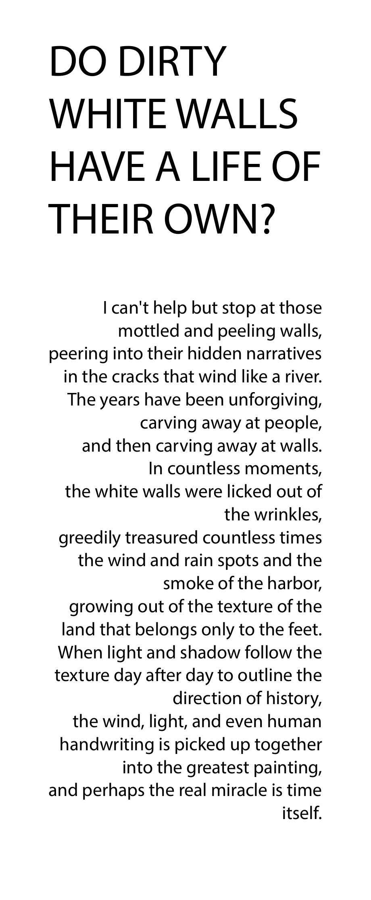
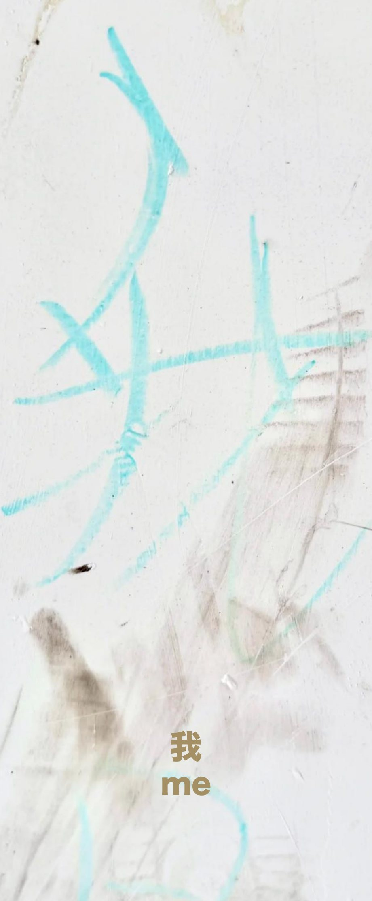
Twenty ways to keep a trace.
每一块样布都有编号，但不是“标准答案”。透明度、毛边、反光、烧蚀孔洞和纤维结块被保留下来，让偶然成为表面语言的一部分。Codes 01–20 · Before / After · Material tests
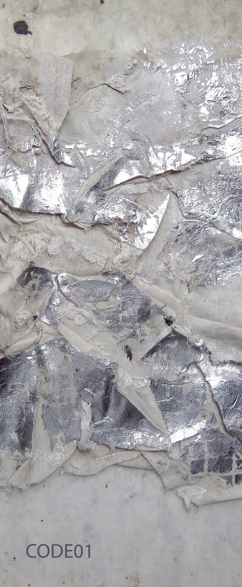
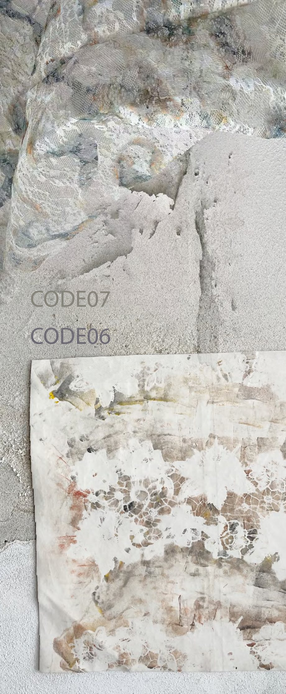
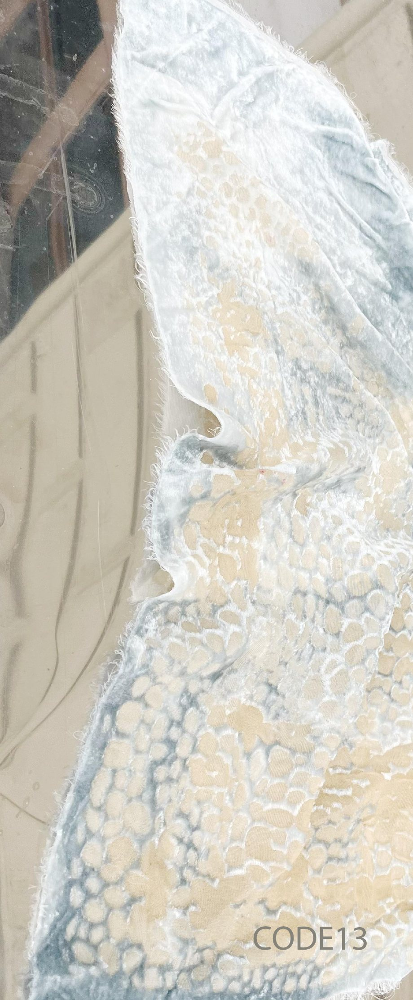
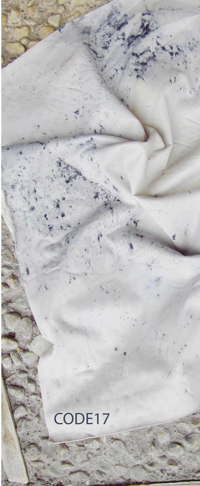
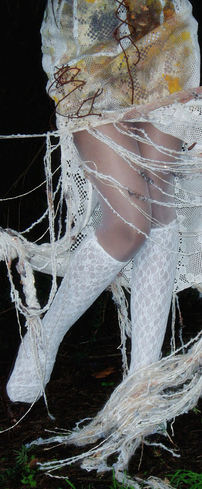
A wall you can wear.
第一套造型把蕾丝、透明层、锈色印迹和外露连接集中在身体中央。长线条像墙缝继续向下生长，衣服在森林里呈现出脆弱又顽强的结构。Lace · Foil · Flour paste · Hand stitch
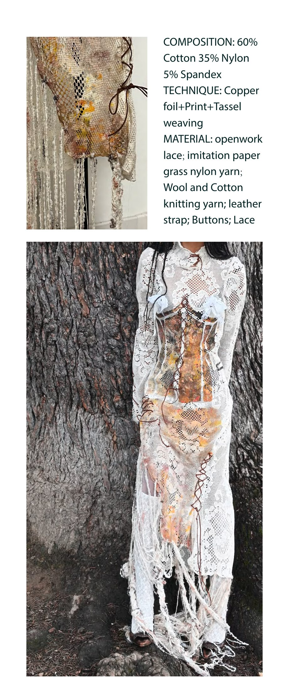
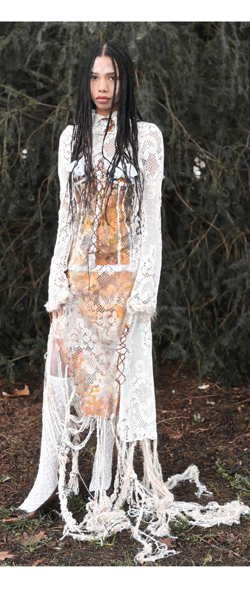
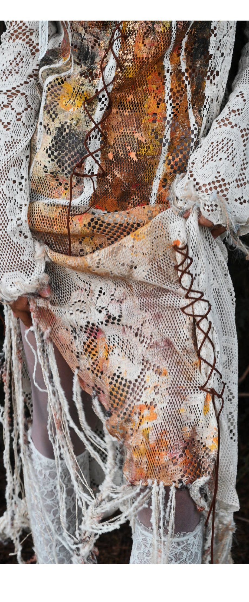
Print, remove, expose.
第二套在针织物上用烧花与印花制造洞口和图腾；第三套以牛仔布承接漂白、烧花和箔印，让粗硬材质呈现被雨水冲刷后的灰白层次。Knit · Denim · Burn-out · Bleaching
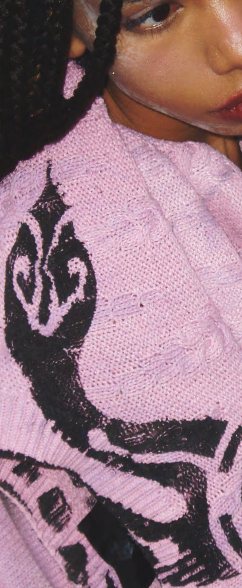
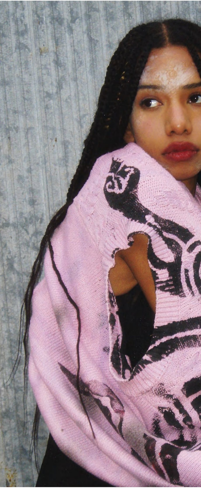
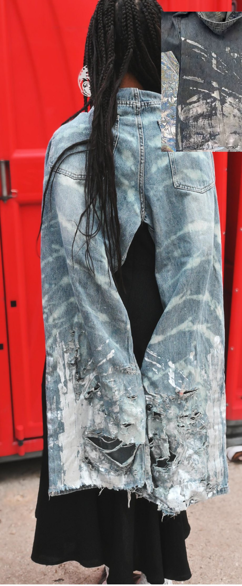
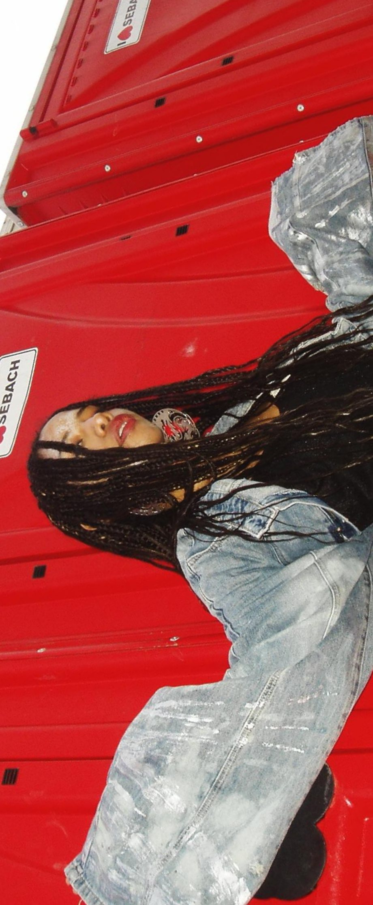
Decay becomes presence.
最终影像不试图修饰材料的破损感。夜间森林和工业金属墙分别放大了两种状态：一边是纤维被侵蚀后的幽灵感，一边是针织物与城市表皮的直接碰撞。Editorial · Detail · Context
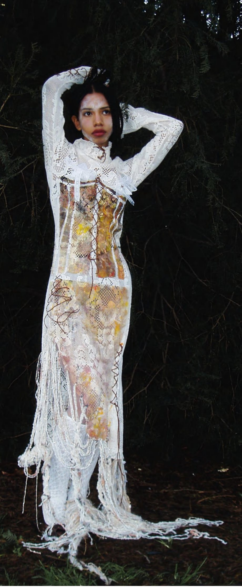
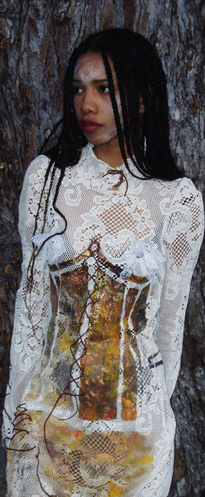
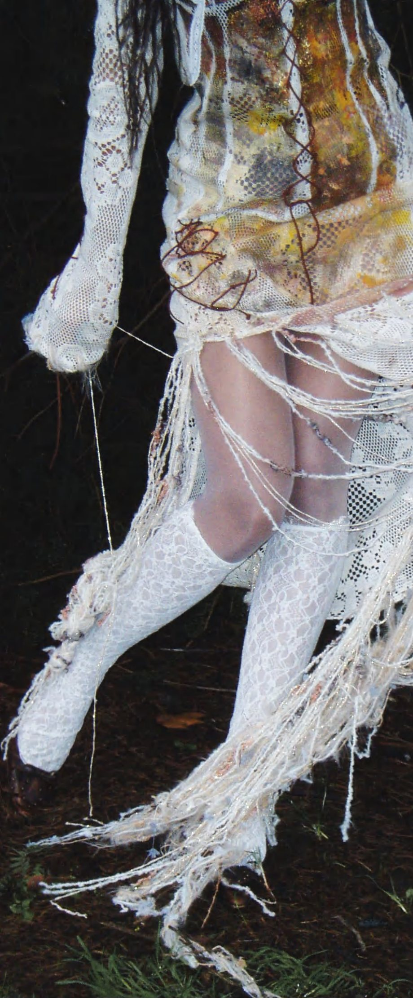
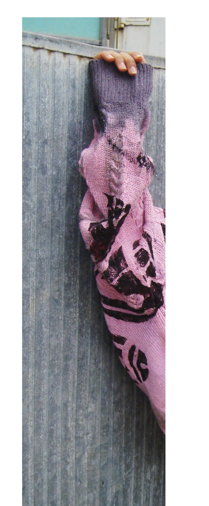
The wall is not a backdrop. It is the first textile in the project.
Return to the origin ↑